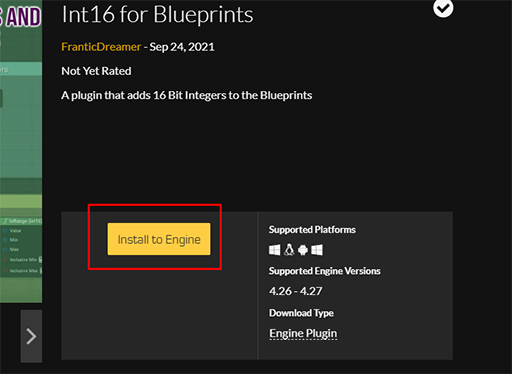
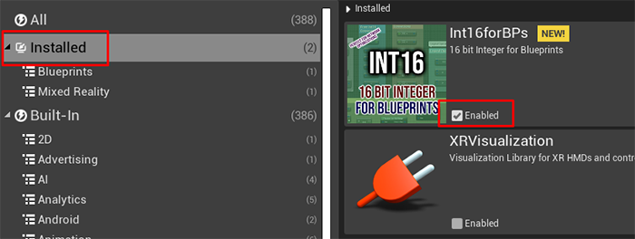
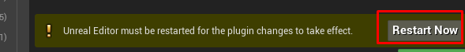

Thank you for using the Int16 plugin.
This quick start tutorial will show you basics of the Int16 plugin
Installation is pretty easy.
There are two ways of doing this.
First way is through the market
Just navigate to the page that you've got the plugin and click to the "Install to Engine" button.

Second way is through the library vault.
Just get to your library and search "Int16" in the vault.
After this, choose your engine version.
When Installation is finished, open up your desired project and enable the plugin.

Then, restart the engine.

After enabling the plugin, create a test actor.
And right click to the blueprint grid to bring up the search bar.
And type in "int16" to see all nodes that you can use with Int16.
For using Int16 as a variable, just create a variable.
Then when choosing "Variable Type", type "integer" into the search bar.
You'll see the "integer16" in the list. Click on it to select it.
Yes! Your variable is ready and you are good to go!
Lets play around using standard UE4 time nodes and Int16's conversion nodes to get a grip of it.
And yay!
If you're in an odd number day of the year, you'll se a text like this:
And that is it. You're all set for using Int16 in your Blueprints.
If you have any problems, you can email me for your questions or you can use Epic's marketplace.
franticdreamer@fdentertainment.uk